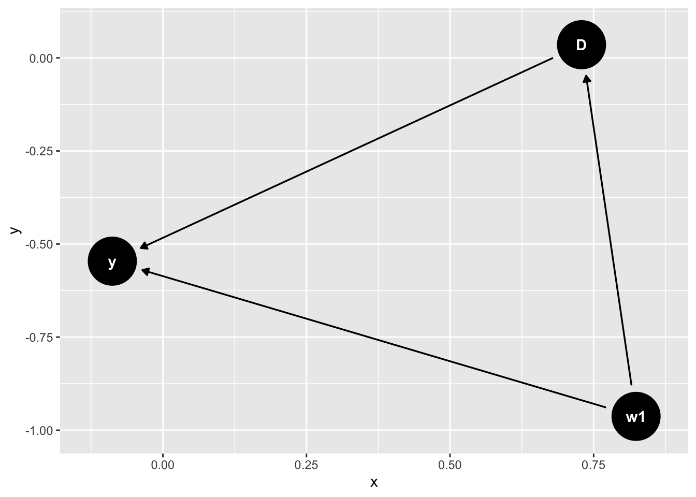
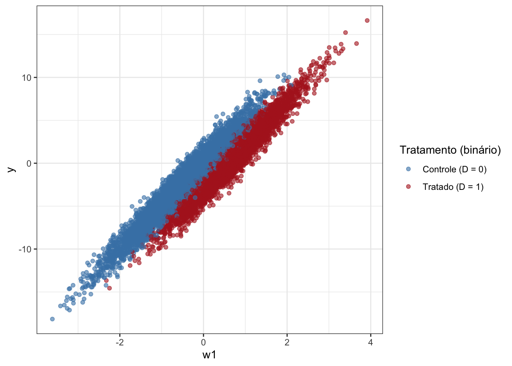
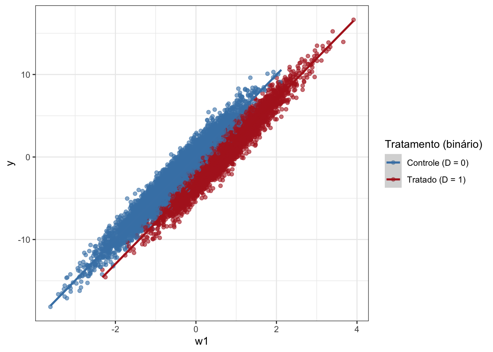
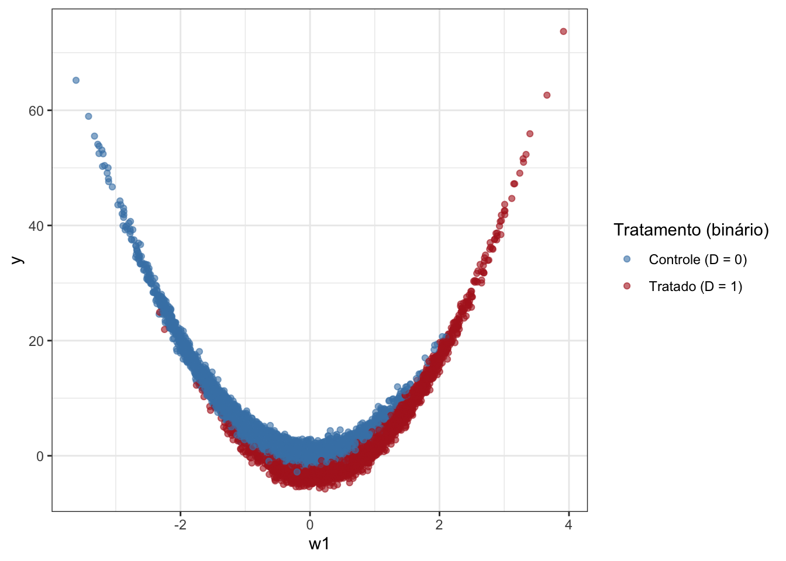
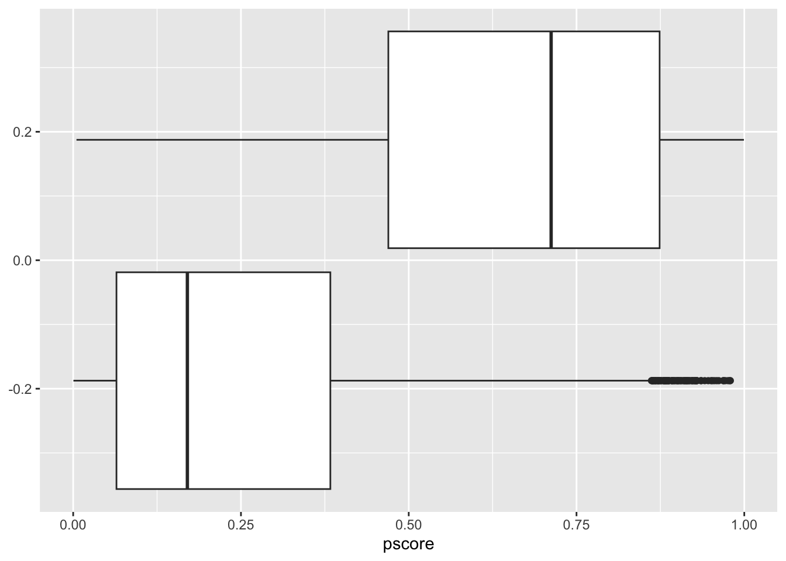
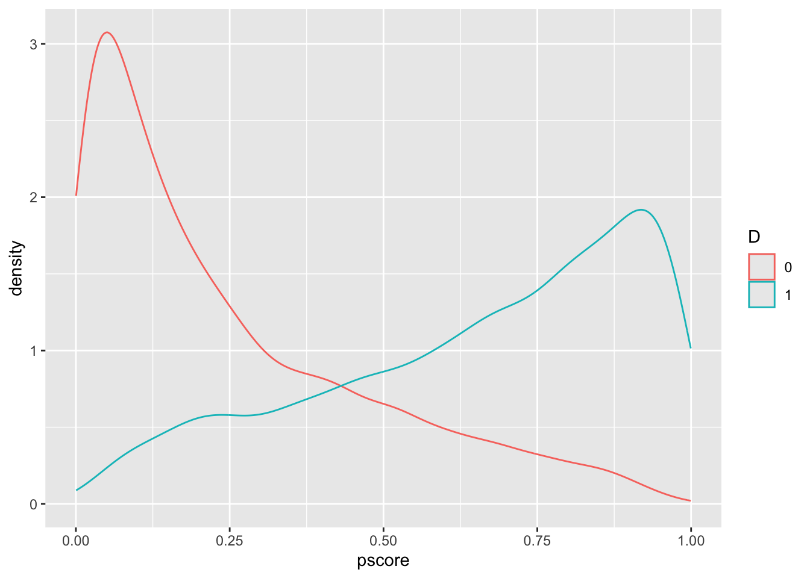

Capítulo 5 Propensity Score e Matching
5.1 Introdução
Na aula de hoje, iremos aprender sobre a principal estratégia de “seleção em observáveis”, que é matching. Mas antes, vamos falar de subclassificação, que é uma técnica mais simples e é útil para introduzir a ideia de matching.
5.2 Propensity Score
O propensity score nada mais é que a probabilidade de uma unidade ser tratada, dadas as covariáveis, ou seja, \(Pr(D_i = 1| X_i)\).
A ideia chave para propensity-score vem de um paper de Rosenbaum-Rubin (1983) em que eles mostram que, se a condição 1 de ignorabilidade forte (isto é, \(Y_i(1), Y_i(0) \perp D_i|X_i\)) for satisfeita, então também é verdade que a condição \(Y_i(1), Y_i(0) \perp D_i|\pi(X_i)\) também é satisfeita. E por que isso é importante? Nós nunca sabemos o verdadeiro modelo que relaciona as covariáveis \(X_i\) com \(D_i\) e \(Y_i\), de modo que podemos ter algum problema de modelo mal especificado (por exemplo, supomos um modelo linear, quando na verdade é não-linear). Então, em vez de estimar dezenas de modelos, posso condicionar (“controlar”) apenas pelo propensity score \(\pi(X_i)\). A intuição é que o propensity score cria balanceamento entre tratados e não-tratados.
Para ilustrar o poder desse resultado, vamos considerar um exemplo simulado, em que ignorability forte é satisfeita, mas um modelo mal-especificado gera amostras não-balanceadas e, portanto, estimativas viesadas.
library(knitr)
library(tidyverse)
library(ggdag)
library(arm)
# true DGP
dag <- dagify(
y ~ D + w1,
D ~ w1
)
ggdag(dag)
O DAG acima ilustra bem qual a relação causal entre variáveis. Para estimar o ATE de \(D\) sobre \(Y\), precisamos fechar o backdoor de \(w_1\). A forma usual como fazemos isso é com regressão. O problema que estamos abordando aqui é quando a amostra é não-balanceada entre tratados e não-tratados. Vamos visualizar dois tipos de relações (uma linear e outra não-linear) entre a variável de controle \(w_1\) e a resposta \(Y\) para ilustrar o problema do desbalanceamento:
library(ggplot2)
set.seed(202)
n <- 1e4
w1 <- rnorm(n) # único confundidor
tau <- 3 # efeito causal verdadeiro
# GERAMOS UM PROPENSITY SCORE NÃO‐LINEAR
p <- plogis(-0.5 + 2 * w1)
D <- rbinom(n, 1, p)
# GERAÇÃO DOS RESULTADOS POTENCIAIS linear (apenas função de w1, forte ignorabilidade):
y0 <- 5 * w1 + rnorm(n)
y1 <- y0 - tau # efeito constante
y <- ifelse(D == 1, y1, y0)
df <- data.frame(y=y, D=D, w1=w1)
df %>%
mutate(
D = factor(D, levels = c(0,1),
labels = c("Controle (D = 0)", "Tratado (D = 1)"))
) %>%
ggplot(aes(x = w1, y = y, colour = D)) +
geom_point(alpha = 0.6) +
scale_colour_manual(
name = "Tratamento (binário)",
values = c("Controle (D = 0)" = "steelblue",
"Tratado (D = 1)" = "firebrick")
) + theme_bw()
No primeiro gráfico, o efeito causal (ATE) do tratamento é \(-3\) e podemos ver nos dados que de fato em média a resposta é menor entre tratados que no controle. Além disso, vemos também que o efeito é basicamente linear. Mas o ponto importante aqui é que existem duas regiões dos dados em que praticamente só temos unidades no controle (\(w_1 < -2\)) e ou no tratamento (\(w_1 > -2\)). Isso significa que para que a regressão possa estimar o efeito causal deve extrapolar a estimativa da região em que ambos tratamento e controle estão presentes nos dados para uma região em que não estão presentes. Como o efeito é constante para todas as regiões de \(w_1\), isso não causa problema e a regressão consegue recuperar o ATE sem viés. O gráfico abaixo ilustra o que a regressão está fazendo:
df %>%
mutate(
D = factor(D, levels = c(0,1),
labels = c("Controle (D = 0)", "Tratado (D = 1)"))
) %>%
ggplot(aes(x = w1, y = y, colour = D)) +
geom_point(alpha = 0.6) +
geom_smooth(method = "lm") +
scale_colour_manual(
name = "Tratamento (binário)",
values = c("Controle (D = 0)" = "steelblue",
"Tratado (D = 1)" = "firebrick")
) + theme_bw()
O gráfico mostra duas retas de regressão ajustadas, uma para o controle (em azul) e outra para o tratamento (em vermelho). Efetivamente, temos de estender as duas retas para as regiões em que não há dados, por meio de extrapolação, que no caso significa continuar a linha reta. Assim, temos uma estimativa dos resultados potenciais nessas regiões e podemos computar o efeito causal médio. Como a extrapolação é razoável, não há problema.
Vejamos agora uma situação em que o efeito de \(w_1\) é não linear sobre \(Y\).
set.seed(202)
n <- 1e4
w1 <- rnorm(n) # único confundidor
tau <- 3 # efeito causal verdadeiro
# GERAMOS UM PROPENSITY SCORE NÃO‐LINEAR
p <- plogis(-0.5 + 2 * w1)
D <- rbinom(n, 1, p)
# GERAÇÃO DOS RESULTADOS POTENCIAIS não-linear (apenas função de w1, forte ignorabilidade):
y0 <- 5 * w1^2 + rnorm(n)
y1 <- y0 - tau # efeito constante
y <- ifelse(D == 1, y1, y0)
df <- data.frame(y=y, D=D, w1=w1)
df %>%
mutate(
D = factor(D, levels = c(0,1),
labels = c("Controle (D = 0)", "Tratado (D = 1)"))
) %>%
ggplot(aes(x = w1, y = y, colour = D)) +
geom_point(alpha = 0.6) +
scale_colour_manual(
name = "Tratamento (binário)",
values = c("Controle (D = 0)" = "steelblue",
"Tratado (D = 1)" = "firebrick")
) + theme_bw()
Aqui, vemos que o efeito é não-linear de \(w_1\) sobre \(Y\) e também o desbalanceamento na amostra. Vamos ver o mesmo gráfico com as duas retas ajustadas para entender como a extrapolação pode ficar bem ruim nesse caso.
df %>%
mutate(
D = factor(D, levels = c(0,1),
labels = c("Controle (D = 0)", "Tratado (D = 1)"))
) %>%
ggplot(aes(x = w1, y = y, colour = D)) +
geom_point(alpha = 0.6) +
geom_smooth(method = "lm") +
scale_colour_manual(
name = "Tratamento (binário)",
values = c("Controle (D = 0)" = "steelblue",
"Tratado (D = 1)" = "firebrick")
) + theme_bw()
Um problema óbvio do modelo é que o efeito de w1 é quadrático, então podemos tentar corrigir isso incluindo um termo quadrático.
##
## Call:
## lm(formula = y ~ D + w1 + I(w1^2), data = df)
##
## Residuals:
## Min 1Q Median 3Q Max
## -3.5311 -0.6586 -0.0043 0.6679 3.8928
##
## Coefficients:
## Estimate Std. Error t value Pr(>|t|)
## (Intercept) -0.012244 0.015950 -0.768 0.443
## D -2.996063 0.025632 -116.890 <2e-16 ***
## w1 -0.013777 0.012639 -1.090 0.276
## I(w1^2) 5.005598 0.007154 699.737 <2e-16 ***
## ---
## Signif. codes: 0 '***' 0.001 '**' 0.01 '*' 0.05 '.' 0.1 ' ' 1
##
## Residual standard error: 0.9976 on 9996 degrees of freedom
## Multiple R-squared: 0.9806, Adjusted R-squared: 0.9806
## F-statistic: 1.688e+05 on 3 and 9996 DF, p-value: < 2.2e-16O efeito causal é negativo, o que é bom, pois está na direção certa, mas ainda está distante do efeito verdadeiro. Isso ilustra também como a estimativa é dependente do modelo, o que é bem ruim, pois não sabemos qual o modelo certo.
Em resumo, quando há desbalanceamento, causamos dependência do modelo, o que é problemático.
Agora, vamos comparar com o propensity score:
library(knitr)
library(tidyverse)
library(ggdag)
# true DGP
reg_aux<- glm(D ~ w1, family = binomial, data=df)
p_score <- reg_aux$fitted.values
reg1 <- lm(y ~ D + p_score)
summary(reg1)##
## Call:
## lm(formula = y ~ D + p_score)
##
## Residuals:
## Min 1Q Median 3Q Max
## -7.921 -4.258 -2.462 1.647 70.708
##
## Coefficients:
## Estimate Std. Error t value Pr(>|t|)
## (Intercept) 4.2799 0.1179 36.307 < 2e-16 ***
## D -2.9562 0.1858 -15.910 < 2e-16 ***
## p_score 1.6681 0.2917 5.718 1.11e-08 ***
## ---
## Signif. codes: 0 '***' 0.001 '**' 0.01 '*' 0.05 '.' 0.1 ' ' 1
##
## Residual standard error: 7.069 on 9997 degrees of freedom
## Multiple R-squared: 0.02781, Adjusted R-squared: 0.02761
## F-statistic: 143 on 2 and 9997 DF, p-value: < 2.2e-16w <- ifelse(D == 1, 1/p_score, 1/(1-p_score)) # pesos IPTW
reg2 <- lm(y ~ D , weights = w)
summary(reg2)##
## Call:
## lm(formula = y ~ D, weights = w)
##
## Weighted Residuals:
## Min 1Q Median 3Q Max
## -15.95 -5.52 -2.87 2.04 324.89
##
## Coefficients:
## Estimate Std. Error t value Pr(>|t|)
## (Intercept) 4.67183 0.09553 48.90 <2e-16 ***
## D -2.57016 0.13452 -19.11 <2e-16 ***
## ---
## Signif. codes: 0 '***' 0.001 '**' 0.01 '*' 0.05 '.' 0.1 ' ' 1
##
## Residual standard error: 9.499 on 9998 degrees of freedom
## Multiple R-squared: 0.03523, Adjusted R-squared: 0.03513
## F-statistic: 365.1 on 1 and 9998 DF, p-value: < 2.2e-16Conseguimos recuperar o ATE sem problemas. E não precisei especificar corretamente a forma funcional da variável de controle \(w_1\) no modelo principal, pois usei o propensity score. Note que precisei modelar corretamente a regressão que calcula o propensity score.
É útil ver como o pscore está distribuído entre os grupos de tratamento e controle:
library(knitr)
library(tidyverse)
library(ggdag)
# true DGP
df <- df %>%
mutate(pscore = p_score)
df %>%
ggplot(aes(pscore, group=D)) + geom_boxplot()

Há desbalanceamento e falta de overlap ou suporte comum, o que leva à extrapolação.
5.3 Matching
A ideia do matching pode ser ilustrada se notarmos o seguinte. A projeção da reta vermelha para pontos abaixo de \(-2\) é de um \(y\) médio muito baixo, enquanto que o \(y\) médio é muito alto para o controle. O oposto é verificado para a região em que \(w_1 > 2\). Portanto, se eu restringir (excluir os casos) a análise para uma região onde a necessidade de extrapolação é menor, o resultado tende a se aproximar do ATE.
library(knitr)
library(tidyr)
library(broom)
library(kableExtra)
reg_sub <- lm(y ~ D + w1, data = df)
reg_sub %>%
tidy() %>%
kable(digits = c(0, 2, 3, 2, 3))| term | estimate | std.error | statistic | p.value |
|---|---|---|---|---|
| (Intercept) | 4.27 | 0.104 | 41.00 | 0 |
| D | -1.30 | 0.180 | -7.18 | 0 |
| w1 | -0.80 | 0.089 | -8.94 | 0 |
reg_sub <- lm(y ~ D + w1, data = subset(df, w1 > -2 & w1 < 2))
reg_sub %>%
tidy() %>%
kable(digits = c(0, 2, 3, 2, 3))| term | estimate | std.error | statistic | p.value |
|---|---|---|---|---|
| (Intercept) | 3.46 | 0.069 | 50.52 | 0 |
| D | -1.99 | 0.119 | -16.70 | 0 |
| w1 | -0.35 | 0.066 | -5.32 | 0 |
reg_sub <- lm(y ~ D + w1, data = subset(df, w1 > -1.5 & w1 < 1.5))
reg_sub %>%
tidy() %>%
kable(digits = c(0, 2, 3, 2, 3))| term | estimate | std.error | statistic | p.value |
|---|---|---|---|---|
| (Intercept) | 2.57 | 0.047 | 55.02 | 0 |
| D | -2.48 | 0.080 | -30.78 | 0 |
| w1 | -0.21 | 0.053 | -3.88 | 0 |
reg_sub <- lm(y ~ D + w1, data = subset(df, w1 > -1 & w1 < 1))
reg_sub %>%
tidy() %>%
kable(digits = c(0, 2, 3, 2, 3))| term | estimate | std.error | statistic | p.value |
|---|---|---|---|---|
| (Intercept) | 1.41 | 0.029 | 49.57 | 0 |
| D | -2.77 | 0.048 | -57.27 | 0 |
| w1 | -0.17 | 0.043 | -3.93 | 0 |
reg_sub <- lm(y ~ D + w1, data = subset(df, w1 > -1 & w1 < 1))
reg_sub %>%
tidy() %>%
kable(digits = c(0, 2, 3, 2, 3))| term | estimate | std.error | statistic | p.value |
|---|---|---|---|---|
| (Intercept) | 1.41 | 0.029 | 49.57 | 0 |
| D | -2.77 | 0.048 | -57.27 | 0 |
| w1 | -0.17 | 0.043 | -3.93 | 0 |
A ideia do matching é um pouco diferente do que fizemos acima, pois estamos excluindo as observações que estão no tratamento e que não possuem controle correspondente, e do controle que não possuem tratamento correspondente. Não há erro em excluir os dois tipos de observações, mas sempre temos de nos perguntar qual é o estimando de interesse. Se faço esse procedimento, o meu estimando não é nenhum dos usuais ATT ou ATE.
No matching, nós nos concentramos em estimar o ATT, de forma que procuramos achar observações no controle que são próximas das tratadas, ou seja, excluímos os controles que não são um match para as observações tratadas.
5.4 Suposições de identificação
Antes de aplicar qualquer método de matching, é fundamental explicitar as suposições que garantem a identificação causal nesse contexto.
Supondo para simplificar um tratamento binário \(T\), e uma covariável categórica \(X\), temos:
\((Y^1, Y^0) \perp T|X \text{ (Independência Condicional)}\)
\(0 < P(T=1|X) < 1 \text{ (Suporte comum)}\)
Temos então a seguinte derivação (usando o fato de que os resultados potenciais são independentes do treatment assignment, condicional à covariável) e a switching equation no último passo:
\[\begin{align} \mathbb{E}[Y^1-Y^0|X] & = \mathbb{E}[Y^1 - Y^0 | X, T=1] \\ & = \mathbb{E}[Y^1| X, T=1] - \mathbb{E}[Y^0| X,T=0] \\ & = \mathbb{E}[Y| X, D=1] - \mathbb{E}[Y| X, D=0] \end{align}\]
E o estimador que usamos pode ser representado (supondo suporte comum) como:
\(\widehat{\delta_{ATE}} = \sum_{x\in X}{(\mathbb{E}[Y| X=x, D=1] - \mathbb{E}[Y| X=x, D=0])P(X=x)}\)
E o que estamos fazendo é computar a média do efeito do tratamento condicional ponderado pela distribuição de \(X\).
Para identificar o ATE, nós precisamos supor independência condicional a ambos os resultados potenciais. Se porém isso for crível apenas para \(Y^0\), podemos estimar o ATT. Basta lembrarmos que \(\mathbb{E}[Y_i|T_i=1] - \mathbb{E}[Y_i|T_i=0] = \mathbb{E}[Y_i^1 - Y_i^0|T_i=1] + \mathbb{E}[Y_i^0|T_i=1] - \mathbb{E}[Y_i^0|T_i=0]\)
5.5 Matching
A técnica de matching trata os resultados potenciais como missing data. Assim, se pudermos supor CIA com credibilidade, pelo menos com relação a \(Y^0\), então podemos imputar esses resultados potenciais e estimar o ATT. A ideia é achar uma unidade a mais similar possível a unidade tratada para servir como contrafactual. Assim, poderíamos computar “diretamente” o ATT, já que teríamos os \(Y^1\) e \(Y^0\) para cada unidade, este último imputado.
Há dois grandes grupos de métodos de matching: exato e aproximado.
5.6 Matching exato
Uma vez que temos as suposições de identificação, podemos discutir os métodos para realizar o matching. O mais simples deles é o matching exato.
Nesse método, nós achamos uma unidade (ou mais) que tenham um valor exatamente igual nas covariáveis (ou no propensity score), e imputamos o controle.
5.7 Matching aproximado
Para aproximar o matching, utilizamos alguma noção de distância entre variáveis. Para mais de uma variável, podemos utilizar algumas métricas de distância. A primeira é a distância euclidiana (supondo \(K\) variáveis).
\[ \lVert X_i - X_j \rVert = \sqrt{(X_i - X_j)'(X_i - X_j)} \] \[ \lVert X_i - X_j \rVert = \sqrt{\sum_{n=1}^k(X_{ni} - X_{nj})^2} \]
A distância euclidiana utiliza a escala das próprias variáveis, então é comum usar a distância euclidiana normalizada:
\[ \lVert X_i - X_j \rVert = \sqrt{\sum_{n=1}^k\frac{(X_{ni} - X_{nj})^2}{\hat{\sigma}_n^2}} \]
Outra métrica é a distância de Mahalanobis, que basicamente divide pela covariância (amostral) entre as variáveis em vez da variância. Mas na prática a gente usa a euclidiana.
5.8 Estimando
Uma vez que fizemos o matching entre unidades, qual nosso estimador? Lembrando que o estimando é o ATT. \[ \widehat{\delta}_{ATT} = \dfrac{1}{N_T} \sum_{D_i=1} (Y_i - Y_{j(i)}) \]
library(MatchIt)
result_0 <- matchit(D ~ w1, data = df, method = NULL, distance = 'glm')
summary(result_0)##
## Call:
## matchit(formula = D ~ w1, data = df, method = NULL, distance = "glm")
##
## Summary of Balance for All Data:
## Means Treated Means Control Std. Mean Diff. Var. Ratio eCDF Mean
## distance 0.6549 0.2493 1.5714 1.2566 0.3685
## w1 0.7004 -0.5362 1.6030 0.9132 0.3685
## eCDF Max
## distance 0.5761
## w1 0.5761
##
## Sample Sizes:
## Control Treated
## All 5806 4194
## Matched 5806 4194
## Unmatched 0 0
## Discarded 0 05.9 Declare Design e Matching
Pode ser útil usar o declare design para investigar o uso de matching. Vamos fazer isso para o dataset lalonde.
Esse é um banco de dados famoso na economia, pois o pesquisador Lalonde (1986) foi investigar se a aplicação de métodos (então) tradicionais de modelagem econométrica eram capazes de recuperar o efeito causal de um estudo experimental chamado National Supported Work Demonstration (NSW), um programa de emprego temporário para dar experiência de trabalho. Ele coletou dados de um survey “representativo” de trabalhadores americanos (PSID) e elencou esses trabalhadores como grupo controle e empregou métodos econométricos para tentar estimar o efeito causal. Os resultados foram desastrosos, no sentido de altamente variáveis dependendo do modelo e subconjunto de dados e longe da estimativa experimental (incluindo com sinal errado).
Vamos replicar esse trabalho, usando matching e pscore. A variável resposta do banco de dados é re78 (real earnings in 1978). O tratamento é a variável treat. As demais variáveis são covariáveis.
## [1] "/Users/manoelgaldino/Documents/DCP/Cursos/Causalidade/Causalidade"lalonde <- fread(here("Dados", "lalonde_nsw.csv"))
dt <- lalonde[, .(re78, treat)] %>%
rename(Y = re78, D = treat)
dt %>%
group_by(D) %>%
sample_n(3) %>%
kableExtra::kable(digits = 0, col.names = c("Income", "Treatment"))| Income | Treatment |
|---|---|
| 0 | 0 |
| 290 | 0 |
| 7010 | 0 |
| 13830 | 1 |
| 0 | 1 |
| 60308 | 1 |
dt %>%
group_by(D) %>%
summarize(mean(Y)) %>%
kableExtra::kable(digits = 0, col.names = c("Treatment", "Income"))| Treatment | Income |
|---|---|
| 0 | 4555 |
| 1 | 6349 |
A diferença simples na média é 1794.
5.9.1 Matching e Propensity scores
Usando age, education, hispanic, black, married, nodegree, RE74 e RE75, vamos modelar o propensity score usando o grupo dos tratados em lalonde_nsw.csv e a amostra de controle de lalonde_psid.csv. Report the average p-score for the treated and control samples, and plot the propensity score densities for the treatment and control groups.
nsw_data <- lalonde
psid_data <- fread(here("Dados", "lalonde_psid.csv"))
nsw_treat <- nsw_data[nsw_data$treat == 1, ]
psid_control <- psid_data[psid_data$treat == 0, ]
dw_data <- rbind(nsw_treat, psid_control)
library(MatchIt)
m.out1 <- matchit(treat ~ age + education + hispanic + black + married + nodegree + re74 + re75,
data = dw_data,
method = "nearest",
distance = "glm")## Warning: glm.fit: probabilidades ajustadas numericamente 0 ou 1 ocorreu##
## Call:
## matchit(formula = treat ~ age + education + hispanic + black +
## married + nodegree + re74 + re75, data = dw_data, method = "nearest",
## distance = "glm")
##
## Summary of Balance for All Data:
## Means Treated Means Control Std. Mean Diff. Var. Ratio eCDF Mean
## distance 0.6364 0.0270 2.1674 8.0268 0.4816
## age 25.8162 34.8506 -1.2627 0.4696 0.2317
## education 10.3459 12.1169 -0.8808 0.4255 0.1091
## hispanic 0.0595 0.0325 0.1139 . 0.0269
## black 0.8432 0.2506 1.6301 . 0.5926
## married 0.1892 0.8663 -1.7287 . 0.6771
## nodegree 0.7081 0.3052 0.8862 . 0.4029
## re74 2095.5737 19428.7458 -3.5471 0.1329 0.4684
## re75 1532.0553 19063.3377 -5.4458 0.0561 0.4695
## eCDF Max
## distance 0.8817
## age 0.3771
## education 0.4029
## hispanic 0.0269
## black 0.5926
## married 0.6771
## nodegree 0.4029
## re74 0.7292
## re75 0.7736
##
## Summary of Balance for Matched Data:
## Means Treated Means Control Std. Mean Diff. Var. Ratio eCDF Mean
## distance 0.6364 0.2934 1.2200 1.4702 0.0432
## age 25.8162 30.4811 -0.6520 0.4149 0.1196
## education 10.3459 10.3784 -0.0161 0.4745 0.0407
## hispanic 0.0595 0.0649 -0.0229 . 0.0054
## black 0.8432 0.7568 0.2379 . 0.0865
## married 0.1892 0.4595 -0.6901 . 0.2703
## nodegree 0.7081 0.6216 0.1902 . 0.0865
## re74 2095.5737 4499.8428 -0.4920 1.1020 0.0722
## re75 1532.0553 3204.3968 -0.5195 0.7389 0.0605
## eCDF Max Std. Pair Dist.
## distance 0.5568 1.2200
## age 0.1784 1.3561
## education 0.0919 1.3281
## hispanic 0.0054 0.5257
## black 0.0865 0.9515
## married 0.2703 1.0213
## nodegree 0.0865 0.9036
## re74 0.4162 0.8667
## re75 0.2973 0.9044
##
## Sample Sizes:
## Control Treated
## All 2490 185
## Matched 185 185
## Unmatched 2305 0
## Discarded 0 0## treat age education black hispanic married nodegree re74 re75 re78
## <int> <int> <int> <int> <int> <int> <int> <num> <num> <num>
## 1: 1 37 11 1 0 1 1 0 0 9930.0459
## 2: 1 22 9 0 1 0 1 0 0 3595.8940
## 3: 1 30 12 1 0 0 0 0 0 24909.4492
## 4: 1 27 11 1 0 0 1 0 0 7506.1460
## 5: 1 33 8 1 0 0 1 0 0 289.7899
## 6: 1 22 9 1 0 0 1 0 0 4056.4939
## distance weights subclass
## <num> <num> <fctr>
## 1: 0.3773454 1 1
## 2: 0.8849355 1 2
## 3: 0.7201238 1 3
## 4: 0.8717413 1 4
## 5: 0.7896888 1 5
## 6: 0.9030698 1 6library("marginaleffects")
fit <- lm(re78 ~ treat * (age + education + black + married +
nodegree + re74 + re75),
data = m.data,
weights = weights)
avg_comparisons(fit,
variables = "treat",
vcov = ~subclass,
newdata = subset(treat == 1))##
## Estimate Std. Error z Pr(>|z|) S 2.5 % 97.5 %
## 1881 879 2.14 0.0325 4.9 157 3605
##
## Term: treat
## Type: response
## Comparison: 1 - 0library(MatchIt)
library(DeclareDesign)
exact_matching <-
function(data) {
matched <- matchit(D ~ X, method = "exact", data = data)
match.data(matched)
}
declaration_16.2 <-
declare_model(
N = 100,
U = rnorm(N),
X = rbinom(N, 1, prob = 0.5),
D = rbinom(N, 1, prob = 0.25 + 0.5 * X),
Y_D_0 = 0.2 * X + U,
Y_D_1 = Y_D_0 + 0.5
) +
declare_inquiry(ATT = mean(Y_D_1[D == 1] - Y_D_0[D == 1])) +
declare_step(handler = exact_matching) +
declare_measurement(Y = reveal_outcomes(Y ~ D)) +
declare_estimator(Y ~ D,
weights = weights,
.method = difference_in_means,
inquiry = "ATT",
label = "Matched difference-in-means") +
declare_estimator(Y ~ D,
.method = difference_in_means,
inquiry = "ATT",
label = "Raw difference-in-means")library(MatchIt)
m.out0 <- matchit(treat ~ age + education + hispanic + black + married + nodegree + re74 + re75,
data = dw_data,
method = NULL,
distance = "glm")## Warning: glm.fit: probabilidades ajustadas numericamente 0 ou 1 ocorreu##
## Call:
## matchit(formula = treat ~ age + education + hispanic + black +
## married + nodegree + re74 + re75, data = dw_data, method = NULL,
## distance = "glm")
##
## Summary of Balance for All Data:
## Means Treated Means Control Std. Mean Diff. Var. Ratio eCDF Mean
## distance 0.6364 0.0270 2.1674 8.0268 0.4816
## age 25.8162 34.8506 -1.2627 0.4696 0.2317
## education 10.3459 12.1169 -0.8808 0.4255 0.1091
## hispanic 0.0595 0.0325 0.1139 . 0.0269
## black 0.8432 0.2506 1.6301 . 0.5926
## married 0.1892 0.8663 -1.7287 . 0.6771
## nodegree 0.7081 0.3052 0.8862 . 0.4029
## re74 2095.5737 19428.7458 -3.5471 0.1329 0.4684
## re75 1532.0553 19063.3377 -5.4458 0.0561 0.4695
## eCDF Max
## distance 0.8817
## age 0.3771
## education 0.4029
## hispanic 0.0269
## black 0.5926
## married 0.6771
## nodegree 0.4029
## re74 0.7292
## re75 0.7736
##
## Sample Sizes:
## Control Treated
## All 2490 185
## Matched 2490 185
## Unmatched 0 0
## Discarded 0 0library(MatchIt)
m.out1 <- matchit(treat ~ age + education + hispanic + black + married + nodegree + re74 + re75,
data = dw_data,
method = "nearest",
distance = "glm")## Warning: glm.fit: probabilidades ajustadas numericamente 0 ou 1 ocorreu# Full matching on a probit PS
m.out2 <- matchit(treat ~ age + education + black + married +
nodegree + re74 + re75,
data = lalonde,
method = "full",
distance = "glm",
link = "probit")
m.data <- match_data(m.out2)
library("marginaleffects")
fit <- lm(re78 ~ treat * (age + education + black + married +
nodegree + re74 + re75),
data = m.data,
weights = weights)
avg_comparisons(fit,
variables = "treat",
vcov = ~subclass,
newdata = subset(treat == 1))##
## Estimate Std. Error z Pr(>|z|) S 2.5 % 97.5 %
## 2064 679 3.04 0.00238 8.7 733 3396
##
## Term: treat
## Type: response
## Comparison: 1 - 0full_matching <-
function(data) {
matched <- matchit(treat ~ age + education + hispanic + black + married + nodegree + re74 + re75, method = "full", data = data)
match.data(matched)
}
declaration_16.2 <-
declare_model(
N = 1000,
U = rnorm(N),
X = rbinom(N, 1, prob = 0.5),
D = rbinom(N, 1, prob = 0.25 + 0.5 * X),
Y_D_0 = 0.2 * X + U,
Y_D_1 = Y_D_0 + 0.5
) +
declare_inquiry(ATT = mean(Y_D_1[D == 1] - Y_D_0[D == 1])) +
declare_step(handler = exact_matching) +
declare_measurement(Y = reveal_outcomes(Y ~ D)) +
declare_estimator(Y ~ D,
weights = weights,
.method = difference_in_means,
inquiry = "ATT",
label = "Matched difference-in-means") +
declare_estimator(Y ~ D,
.method = difference_in_means,
inquiry = "ATT",
label = "Raw difference-in-means")5.10 Recomendações Práticas sobre Matching
Rotina ou algoritmo:
Defina o que é proximidade: alguma distância de medida para determinar se um caso é um bom match e quais variáveis utilizar. Em geral, distância euclidiana.
Implemente o método do match.
Avalie a qualidade do método, por meio do balanceamento antes e depois do match. Se necessário, altere o passo 1 ou 2 e itere.
Faça a inferência sobre o efeito causal do tratamento sobre a resposta, dado o matching feito em 3. ### Avaliação do matching feito
É melhor usar matching exato ou aproximado do que propensity score matching, pois o poder do teste é melhor (cf. King & Nielsen, 2019).
Não devemos fazer teste de hipótese para checar que o balanceamento após matching é melhor do que antes (amostra menor reduz o poder do teste de detectar desbalanceamento. Além disso, não há superpopulação alvo da inferência, pois balanceamento é uma propriedade de uma amostra em particular). Cf. Austin 2009.
Além de comparar médias, é recomendado comparar variâncias ou desvios-padrão (Austin 2009). Por exemplo, razão de variâncias.
Jamais use a variável resposta para fazer o matching.
Matching com reposição gera dificuldades para calcular o erro padrão, já que as observações não são independentes.
Em resumo, matching é uma ferramenta poderosa para estimar efeitos causais em estudos observacionais, mas requer atenção ao balanceamento, à escolha do método e à plausibilidade da suposição de independência condicional. No próximo capítulo, veremos uma abordagem alternativa — variáveis instrumentais — que permite a identificação causal mesmo quando a seleção em observáveis não é crível.
5.11 Referências
Austin, P. C. (2009). Balance diagnostics for comparing the distribution of baseline covariates between treatment groups in propensity‐score matched samples. Stat Med.
King, G., & Nielsen, R. (2019). Why propensity scores should not be used for matching. Political analysis, 27(4), 435-454.
Stuart, E. A. (2010). Matching methods for causal inference: A review and a look forward. Statistical science: a review journal of the Institute of Mathematical Statistics, 25(1), 1.